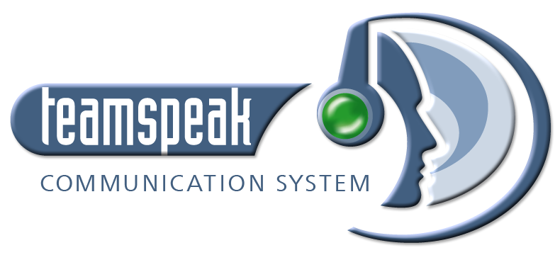

连接 TeamSpeak 服务器

Teamspeak（简称TS）是一款团队语音通讯工具，但比一般的通讯工具具有更多的功能而且使用方便。它由服务器端程序和客户端程序两部分组成，如果不是想自己架设TS服务器，只需下载客户端程序即可。Teamspeak依靠先进的体系结构，方便灵活的应用功能，特别是领先的多媒体技术，为用户提供了一款强大的网络通讯工具。
窗口简洁，不附带与语音无关的东西，没有多余的内容。
无捆绑后台引用，大大减少了语音软件对资源的占用，只为语音而生。
无需注册等繁琐过程，安装跳过注册界面即可进入服务器聊天，方便快捷。